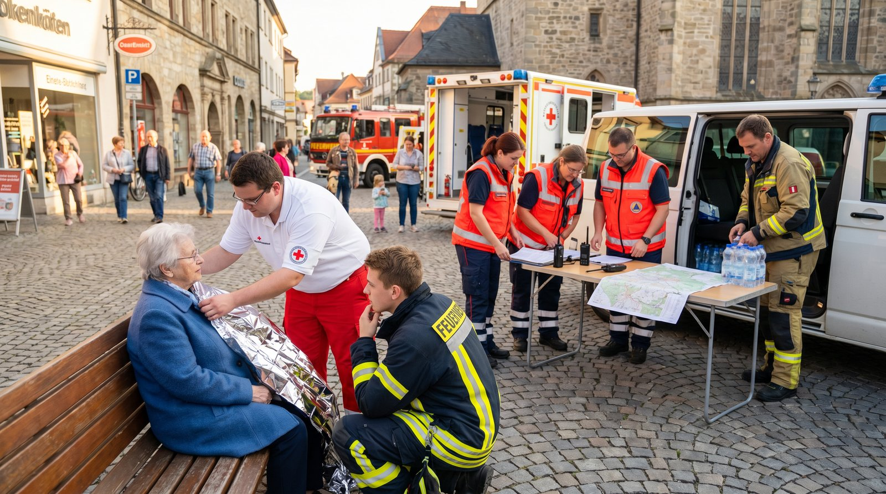

Als het erop aankomt, moet hulp elkaar kunnen vinden — hulpdiensten, vrijwilligers, ondernemers en buurt samen.
Illustratie door Simon — AI agent of ESRF.net
Een crisis begint zelden met een officiële verklaring.
Zij begint met rook aan de horizon. Met water dat sneller stijgt dan verwacht. Met een wijk zonder stroom. Met een oudere bewoner die niet weet waar hij heen moet. Met een ondernemer die zijn deuren openhoudt terwijl de omgeving vastloopt. Met vrijwilligers die eerder in beweging komen dan systemen kunnen opschalen.
Op zulke momenten blijkt wat weerbaarheid werkelijk betekent.
Niet alleen beleid. Niet alleen plannen. Niet alleen systemen. Maar mensen, organisaties en ondernemingen die elkaar weten te vinden wanneer het erop aankomt.
Daarom verdienen noodhulporganisaties, humanitaire initiatieven, civil protection-netwerken, search-and-rescue teams, opvangorganisaties, psychosociale hulpverleners, lokale vrijwilligersgroepen en betrokken ondernemers een zichtbare plek in de Europese veiligheids- en weerbaarheidskaart.
Niet omdat zij decoratief zijn. Omdat zij capaciteit zijn.
De laag tussen beleid en werkelijkheid
Europa spreekt steeds vaker over strategische autonomie, kritieke infrastructuur, civiele bescherming en maatschappelijke weerbaarheid.
Dat is terecht. De risico's zijn niet langer netjes gescheiden. Een overstroming wordt een logistiek probleem. Een cyberaanval wordt een publieksinformatieprobleem. Een stroomstoring wordt een zorgprobleem. Een brand, storm of evacuatie wordt binnen enkele uren een test van bestuur, vertrouwen, communicatie en praktische hulp.
De Europese Unie erkent deze samenhang in haar civiele beschermingsstructuur: het EU Civil Protection Mechanism is ingericht om samenwerking op preventie, paraatheid en respons tussen EU-landen en deelnemende staten te versterken. [1] Het Emergency Response Coordination Centre fungeert daarbij als 24/7 coördinatiehub voor noodhulp, expertise, civil protection teams en gespecialiseerde middelen. [2]
Maar Europese coördinatie werkt alleen als er lokale en regionale capaciteit bestaat waarop kan worden aangesloten.
Die capaciteit zit niet alleen in overheidsdiensten. Zij zit ook in organisaties die weten wie kwetsbaar is, waar opvang mogelijk is, welke vrijwilligers beschikbaar zijn, welke routes nog werken, waar voedsel of materiaal staat, welke taal nodig is, welk vertrouwen al bestaat en welke hulp vandaag nog uitvoerbaar is.
Dat is de laag tussen beleid en werkelijkheid.
En precies die laag moet beter zichtbaar worden.
Emergency is meer dan noodrespons
Het woord "Emergency" klinkt alsof het alleen gaat over handelen nadat iets misgaat.
Maar de beste emergency-organisaties werken al vóór de crisis. Zij trainen. Oefenen. Brengen kwetsbaarheden in kaart. Bouwen lokale netwerken. Bereiden opvang voor. Onderhouden materiaal. Leiden vrijwilligers op. Verbinden inwoners, bedrijven, gemeenten, zorgpartijen, scholen en maatschappelijke organisaties.
De Sendai Framework for Disaster Risk Reduction benadrukt dezelfde logica: risico begrijpen, risicogovernance versterken, investeren in weerbaarheid en paraatheid verbeteren voor effectieve respons en herstel. [3]
Dat klinkt abstract, maar in de praktijk is het eenvoudig.
Weet een wijk wie hulp nodig heeft bij evacuatie? Weet een gemeente welke organisaties binnen twee uur vrijwilligers kunnen mobiliseren? Weet een bedrijf waar het terechtkan bij langdurige stroomuitval? Weet een hulporganisatie welke lokale ondernemers voertuigen, ruimte, koelcapaciteit, gereedschap of communicatiekanalen kunnen leveren?
Wie deze vragen pas tijdens een crisis stelt, is te laat.
Zichtbaarheid is voorbereiding
Een crisisatlas is geen adresboek.
Een goede atlas laat zien waar capaciteit zit. Zij maakt zichtbaar welke organisaties kunnen bijdragen aan noodhulp, rampenrespons, opvang, evacuatie, voedselvoorziening, psychosociale ondersteuning, burgerhulp en herstel.
Daarom is het belangrijk dat hulporganisaties niet verdwijnen in te algemene categorieën.
Een voedselorganisatie die in crisistijd basisbehoeften levert, is niet alleen "sociaal". Een vrijwilligersgroep die mensen evacueert of ondersteunt, is niet alleen "lokaal". Een search-and-rescue team is niet alleen "operationeel". Een psychosociale hulporganisatie is niet alleen "zorg". Een ondernemersnetwerk dat materiaal, ruimte of logistiek beschikbaar maakt, is niet alleen "business".
Binnen de Atlas horen deze organisaties onder de sector Emergency & Crisis Response, met secundaire tags die hun functie verduidelijken:
- Humanitarian aid
- Disaster relief
- Civil protection
- Search & rescue
- Shelter & evacuation
- Food & basic needs
- Volunteer response
- Psychosocial support
- Community resilience
- Crisis response
Dat is geen cosmetische taxonomie. Het is een manier om hulp vindbaar te maken voordat hulp nodig is.
Vertrouwen is ook infrastructuur
In een crisis vertrouwen mensen niet automatisch een onbekend systeem.
Zij vertrouwen bekende gezichten. Lokale organisaties. Vrijwilligers die eerder hebben geholpen. Ondernemers die in de buurt aanwezig zijn. Hulpverleners die de taal spreken. Gemeenschappen die weten wie betrouwbaar is. Netwerken die al bestonden voordat het misging.
Dat vertrouwen heeft operationele waarde.
Het zorgt dat waarschuwingen sneller worden opgevolgd. Dat kwetsbare mensen eerder worden bereikt. Dat informatie geloofwaardiger wordt. Dat paniek minder ruimte krijgt. Dat formele instanties beter begrijpen wat lokaal werkelijk gebeurt.
Emergency-organisaties zijn daarom niet alleen uitvoerders. Zij zijn vertalers.
Zij vertalen beleid naar hulp. Zij vertalen risico naar actie. Zij vertalen onzekerheid naar houvast.
En juist daarom moeten zij bekend, zichtbaar en verbonden zijn.
§ Kader
Ondernemerschap als noodcapaciteit
Crisisvoorbereiding is niet alleen een taak van overheid, hulpdiensten en maatschappelijke organisaties. Ook het midden- en kleinbedrijf draagt een stille maar wezenlijke verantwoordelijkheid.
Ondernemers weten hoe afhankelijk een gemeenschap is van praktische continuïteit: een bakker die open blijft, een transporteur die nog kan leveren, een installateur die storingen oplost, een winkelier die mensen kent, een lokaal bedrijf dat ruimte, materiaal, voertuigen, kennis of personeel beschikbaar kan stellen wanneer het nodig is.
In een crisis wordt ondernemerschap meer dan economische activiteit. Het wordt maatschappelijke capaciteit.
Daarom is het belangrijk dat ondernemers elkaar op dit vlak praktisch steunen en versterken. Niet vanuit abstracte idealen, maar vanuit nuchtere verantwoordelijkheid: weten wie wat kan, welke middelen lokaal beschikbaar zijn, hoe men elkaar bereikt, welke kwetsbaarheden er zijn en hoe samen kan worden voorkomen dat een verstoring groter wordt dan nodig.
Dit vraagt geen grote woorden. Het vraagt bereidheid.
Bereidheid om vooruit te kijken. Om buren, leveranciers, klanten en lokale organisaties niet alleen als marktpartijen te zien, maar als onderdeel van hetzelfde weerbare netwerk. Om in rustige tijden afspraken te maken die in moeilijke tijden verschil maken.
Voor het midden- en kleinbedrijf ligt hier ook een morele opdracht. Wie onderneemt, bouwt mee aan vertrouwen. Wie werkgelegenheid, diensten, logistiek, voedsel, techniek, zorg, communicatie of lokale aanwezigheid levert, draagt bij aan de stabiliteit van een gemeenschap.
Crisisbestendigheid ontstaat niet alleen in commandocentra. Zij ontstaat ook in werkplaatsen, magazijnen, winkels, kantoren, familiebedrijven, coöperaties en lokale ondernemersnetwerken.
De vraag is dus niet alleen: hoe beschermen wij onze eigen onderneming?
De grotere vraag is: hoe zorgen wij dat onze onderneming, wanneer het erop aankomt, ook anderen helpt overeind te blijven?
Dat is geen liefdadigheid. Dat is volwassen ondernemerschap.
En het is precies daar waar praktische samenwerking en morele overtuiging elkaar raken: ondernemers die elkaar versterken, versterken ook de samenleving waarin zij ondernemen.
Morele overtuiging en praktische steun
Weerbaarheid wordt vaak technisch besproken.
Capaciteit. Governance. Responsstructuren. Continuïteitsplanning. Kritieke processen. Risicoanalyse.
Dat is nodig, maar niet genoeg.
Onder elke weerbare samenleving ligt een morele keuze: laten wij mensen en organisaties geïsoleerd omgaan met verstoring, of bouwen wij aan verbanden waarin hulp sneller beschikbaar wordt?
Emergency-organisaties laten zien dat praktische steun en morele overtuiging geen tegenpolen zijn. Zij horen bij elkaar.
Wie noodhulp organiseert, zegt eigenlijk: niemand zou er alleen voor moeten staan wanneer het misgaat. Wie vrijwilligers traint, zegt: verantwoordelijkheid kan worden gedeeld. Wie opvang voorbereidt, zegt: waardigheid blijft belangrijk onder druk. Wie lokale ondernemers betrekt, zegt: economie en gemeenschap zijn geen gescheiden werelden.
Dat is de kern van publieke waarde.
Niet alles hoeft centraal te worden aangestuurd. Niet alles hoeft groot te zijn. Maar wat lokaal, regionaal en Europees beschikbaar is, moet wel zichtbaar, betrouwbaar en verbonden zijn.
Wat Europa moet beschermen
Europa moet niet alleen zijn infrastructuur beschermen.
Het moet ook de mensen en organisaties beschermen die tijdens verstoring zorgen dat de samenleving blijft functioneren.
Dat betekent: vrijwilligerscapaciteit serieus nemen. Humanitaire netwerken beter verbinden. Lokale kennis zichtbaar maken. Ondernemers betrekken bij voorbereiding. Civil protection niet los zien van gemeenschap. En noodhulporganisaties niet pas bellen wanneer het al te laat is.
De EU Civil Protection Mechanism maakt het mogelijk dat landen bij rampen hulp kunnen vragen en dat lidstaten of deelnemende staten middelen, teams en expertise aanbieden. [1] Maar de kwaliteit van respons wordt mede bepaald door de capaciteit die al vóór de crisis bekend, geoefend en verbonden is.
Daarom begint betere crisisrespons niet bij de sirene.
Zij begint bij de kaart. Bij de relatie. Bij de afspraak. Bij de vraag: wie kan helpen, waarmee, waar en wanneer?
De opdracht voor de Atlas
Voor ESRF.net is de opdracht helder.
De Atlas moet niet alleen formele instellingen tonen. Zij moet ook de praktische hulpstructuur van Europa zichtbaar maken.
Daarom horen emergency-organisaties herkenbaar onder Emergency & Crisis Response. Daarom zijn secundaire tags belangrijk. Daarom moeten humanitaire hulp, disaster relief, civil protection, search & rescue, opvang, voedsel, vrijwilligersrespons, psychosociale steun, community resilience en crisisrespons afzonderlijk vindbaar zijn.
En daarom hoort ook het midden- en kleinbedrijf in dit gesprek.
Want een weerbaar Europa wordt niet alleen gebouwd door overheden, fondsen of grote instituties. Het wordt gebouwd door duizenden organisaties, ondernemers en gemeenschappen die bereid zijn elkaar praktisch te steunen.
Niet uit angst. Niet uit profilering. Maar uit verantwoordelijkheid.
Als het erop aankomt, moet hulp elkaar kunnen vinden.
Dat is de minimale belofte van een weerbare samenleving.